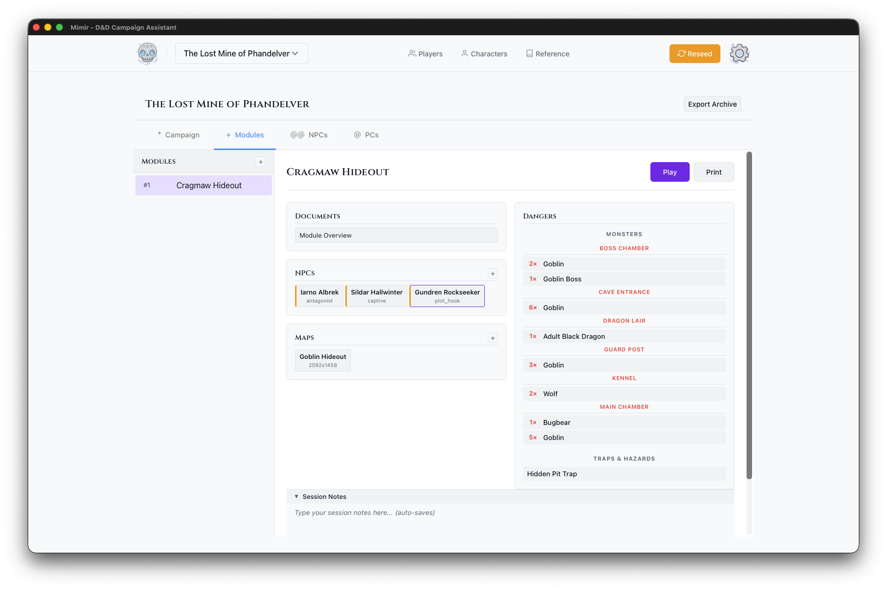
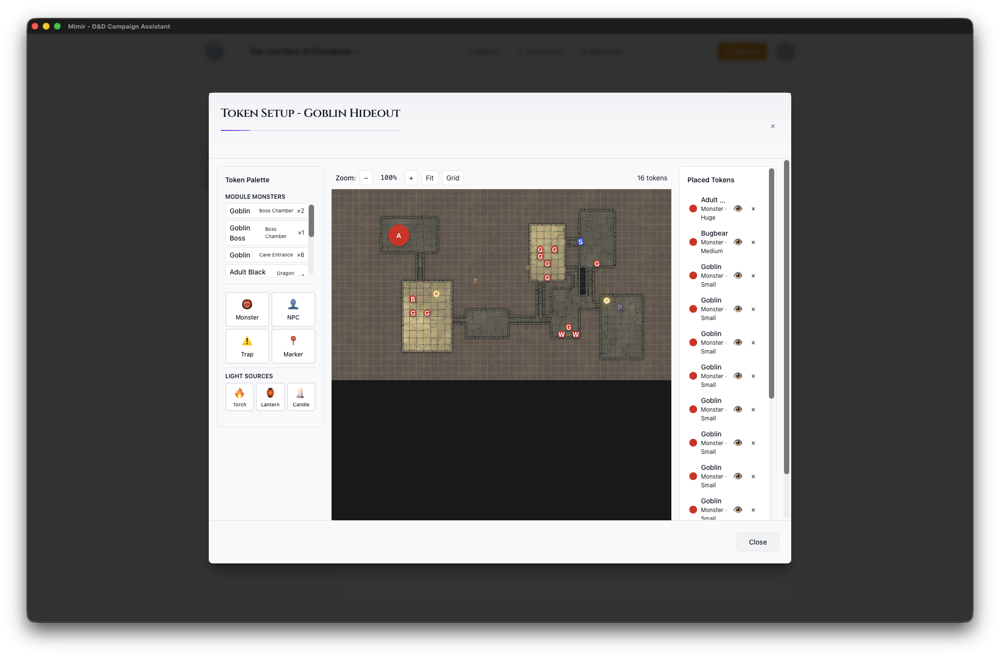

Your First Module
This tutorial walks you through creating an adventure module in Mimir. By the end, you’ll have a module with maps, monsters, and tokens ready for play.
Time to complete: 15-20 minutes
What you’ll learn:
- Create a module within your campaign
- Upload and configure maps
- Add monsters from the D&D 5e catalog
- Place tokens on maps with the Token Setup tool
- Add light sources for dynamic lighting
Prerequisites
- A campaign created (Tutorial 1)
- A map image (PNG, JPG, or UVTT file)
What is a Module?
In Mimir, a module is a self-contained adventure within your campaign. Think of it as a chapter or episode - “The Goblin Hideout”, “Dragon’s Lair”, or “The Haunted Manor”. Each module has its own:
- Maps and encounters
- Monsters and traps
- NPCs
- Session notes and documents
This separation lets you prepare adventures independently and reuse them across campaigns.
Step 1: Navigate to the Modules Tab
- Open your campaign from the Campaign Selector
- Click the Modules tab in the dashboard
You’ll see the module sidebar (left) and the main panel (right).

Step 2: Create a Module
- Click the + button in the Modules section
- In the Create Module dialog:
- Module Name - Enter a descriptive name (e.g., “The Lost Mine - Cragmaw Hideout”)
- Module Type - Select the type (Standard Adventure, Mystery, Dungeon Crawl, Heist, Horror, Political Intrigue)
- Description (optional) - Add notes about the module
- Click Create
Your new module appears in the modules list.
Step 3: Explore the Module Dashboard
The modules table shows each module with action buttons:
- Play - Enter Play Mode for this module (enabled when module is ready or active)
- Open - Open the module board for prep
- PDF - Export maps and materials to PDF
Step 4: Upload a Map
-
In the Maps section, click the + button
-
Choose your map file:
- Image files (PNG, JPG, WebP) - Standard map images
- UVTT files - Universal VTT format with embedded grid data
-
Configure the map settings:
- Name - Display name for the map
- Grid Size - Pixels per grid square (typically 70-140)
- Grid Offset - Adjust if the grid doesn’t align with the image
-
Click Upload
Tip: UVTT files from tools like Dungeondraft include grid configuration automatically, saving setup time.
Step 5: Open Token Setup
The Token Setup modal is where you add monsters, place tokens, and configure your map.
- Click a map card in the Maps section
- The Token Setup modal opens showing:
- Token Palette (left) - Token types and monster search
- Map Canvas (center) - The map with grid overlay
- Token Inventory (right) - Placed tokens and light sources

Token Palette Sections
The palette contains several sections:
- Monster - Search and add monsters from the D&D 5e catalog
- NPC - Add NPC tokens
- Trap - Add traps and hazards
- Object - Add generic object tokens
- Light Sources - Torch, Lantern, Candle
Step 6: Add Monsters
- In the Token Palette, click Monster
- Search for a monster by name (e.g., “Goblin”, “Wolf”, “Bugbear”)
- Select a monster from the search results
- Configure token options (size, color, visibility)
- Click on the map to place the monster token
Repeat to add more monsters. Each placed monster appears in the Token Inventory on the right.
Token Options
When you select a token type from the palette, you can configure:
- Size - Tiny, Small, Medium, Large, Huge, Gargantuan
- Color - Token border color for identification
- Visible to Players - Toggle whether players can see this token
Managing Placed Tokens
Placed tokens appear in the Token Inventory (right panel):
- Click a token to select it on the map
- Drag tokens to reposition them
- Right-click for a context menu with options
- Click the × to delete a token
Step 7: Add Light Sources
For dynamic lighting and fog of war:
-
In the Token Palette, find the Light Sources section
-
Click a light type:
- Torch - 20 ft bright / 40 ft dim
- Lantern - 30 ft bright / 60 ft dim
- Candle - 5 ft bright / 10 ft dim
-
Click on the map to place the light source
Managing Light Sources
Light sources appear in the Token Inventory under “Light Sources”:
- Lit/Unlit button - Toggle whether the light is active
- Light sources affect fog of war in Play Mode
- Delete with the × button
Step 8: Configure the Grid (Image Files Only)
Note: Skip this step if you uploaded a UVTT file - the grid is configured automatically.
If your map’s grid doesn’t align correctly:
-
Click the Grid button in the canvas controls
-
Adjust settings:
- Grid Size - Pixels per square
- X Offset - Horizontal shift
- Y Offset - Vertical shift
-
Click Save to apply
The grid overlay shows your adjustments in real-time.
Step 9: Save and Close
Token placements save automatically. Click × or press Escape to close the Token Setup modal.
Your module is now ready for play!
What’s Next?
Your module is prepared with maps, monsters, and tokens. Continue to:
- Run your first session - Use Play Mode to run an encounter
- Add more content - Upload additional maps, add NPCs, create documents
- Prepare multiple modules - Create the next chapter of your adventure
Quick Reference
| Action | How To |
|---|---|
| Create module | Modules tab → + button |
| Upload map | Maps section → + button |
| Open token setup | Click a map card |
| Add monsters | Token Setup → Monster → search → click map |
| Place token | Select in palette → click map |
| Add light source | Light Sources → select → click map |
| Toggle light | Token Inventory → Lit/Unlit button |
| Configure grid | Grid button in canvas controls |
Next tutorial: Running Your First Session